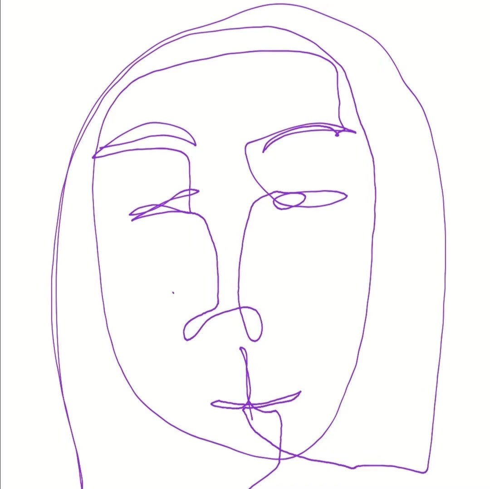

Adriana Romero is a senior majoring in Sociology and minoring in Public Affairs. Adriana’s field of study and lived experiences have made her passionate about dismantling institutional racism which produces inequalities that negatively impact marginalized communities. In the past few years she has studied the patterns anti-Asian policies and practices in the United States. She is disgusted by the rise in hate crimes directed towards Asian communities and believes that it is important to address the numerous historical and present factors that contribute to it.

Haiqi is a junior double majoring in Art History and French and minoring in Digital Humanities. She is interested in topics related to the environment and human rights. As someone born and raised in Shenzhen, China, she is very concerned about the rising incidents of anti-Asian hate crimes and would like to learn more about different factors that could have contributed to the increase in anti-Asian hate crimes.
Roles

Labiba is a senior majoring in Bioengineering with a technical breadth in Digital Humanities. As a person who is more exposed to the effects of Covid-19 from a scientific point-of-view, she wants to tackle Covid-19’s correlation to the rise of Asian American hate crimes as a humanities topic for a change of perspective.
Roles
- Powerpoint Designer
- About Us Page Coder
- Email Correspondent

Lynn Tieu is in her final year as an Economics major and Digital Humanities minor. As a Chinese Vietnamese American, she has a personal interest in the patterns of Asian hate and discrimination.